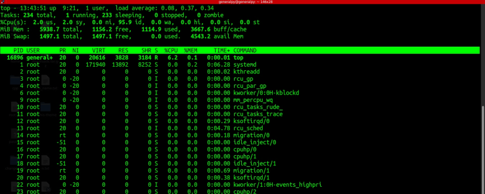
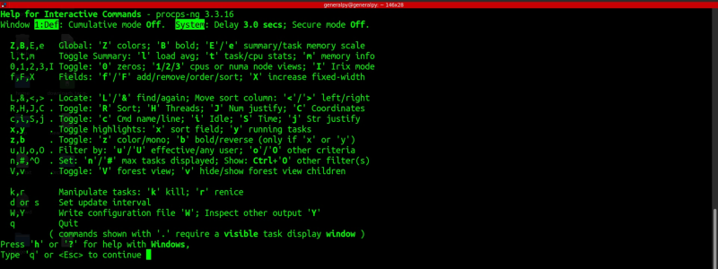
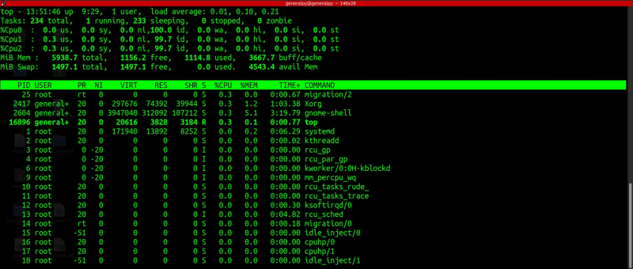
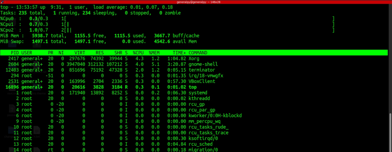
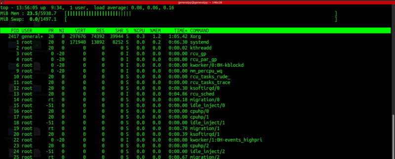
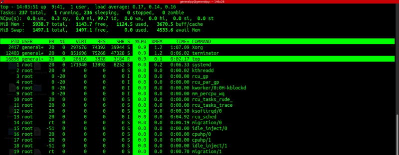
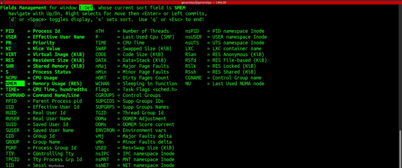
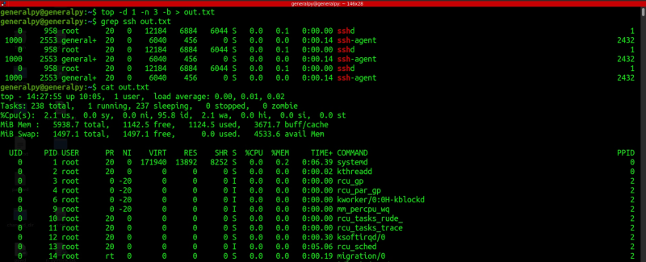

All process viewing commands we saw till now are not realtime. We have to run those commands everytime we want to check process states.
There are some commands in linux which are used to show realtime process info of the system.
top is one such command. top has been in existence from very early days of linux and there are many different variants of top available now.
Simple top command can be invoked by using top.

This is the default view of top which is updated every 3 seconds and we can see a flicker when top's contents are updated.
Output of top can be divided into 2 parts, summary and process info.
Summary section shows summary of the system at the current time. Summary includes sustem uptime, load(whose values must be less than 1) cpu usage etc. Each section's details are available in man page of top.
Use q to quit the top interface.
In output of top, the running processes are higlighted(like top in above image).
There are some special letters which hold special meaning in top output screen.
Letter h is used to get help. We can press q or <esc> to exit help screen.

Press 1 to get usage of each core of cpu if you have multiple cores.

We can press t to switch cpu usage views. We can get simple ascii graphs or completely hide cpu info. Press multiple times to switch between views.

We can press m to get ascii graphs for memory info. Same as t, can switch between different graphs and can also hide the info.

Default refresh time of top is 3 seconds. We can change it by pressing d and then entering time. Time can also be less than 1.
Press space bar to manually refresh top output.
To highlight which column is used to sort and which process is currently running in foregroung we can use x and y respectively. On top of that, we can use b to swith between higlighting schemes, text bold highlight or whole cell highlight.
Whole cell highlighted. %CPU is used to sort outputs and top is currently running in foreground.

To change column used to sort, press < or > to move left and right respectively. To sort in reverse order press R.
To change memory unit press e.
Since sorting is so important, there are some dedicated shortcuts for sorting. Press P to sort by processors(CPU) and M to sort by memory.
We can use u to show only process of a praticular user.
To manage what fields are displayer and in what order they are displayed, we can use field management scree which we can access using F.

Fields which have * before them and are highlighted are currently active in top output. To select a field, navigate to that field using up and down arrow keys and then press space.
To change order in which fields are displayed , go to any field press right arrow and then move that field to desired position. Press left to move out of moving area.
Press esc and then changes will be reflected. These changes will be lost when top we quit top. Press W which stands for write to permanently write these changes.
When top refreshes, we cannot see what was the change in process. So we can instead run multiple iterations of top and then dump contents to a text file and then grep it for logging purposes.
top allows us to use command line arguments. We will use that.
top -d 1 -n 3 -b > out.txt
-d is used for delay , -n is for number of iterations and -b is to start in batch mode which allows us to provide top's output to other commands.

The file contains 3 iterations of top with delay of 1 second between them. Iterations here is number of times top must run before exiting.
There is another interactive process viewer which is easier and more visually appealing than top. It is htop. It must be installed as it is not available by default in most distros.